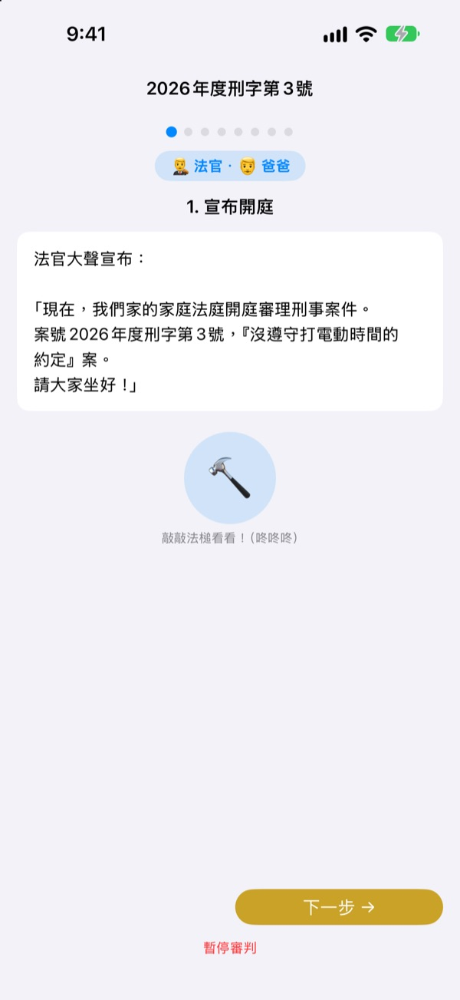
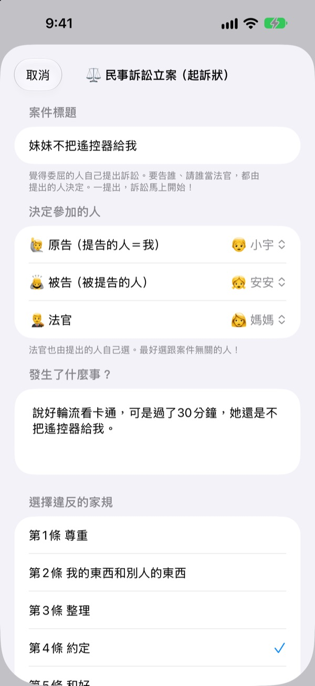
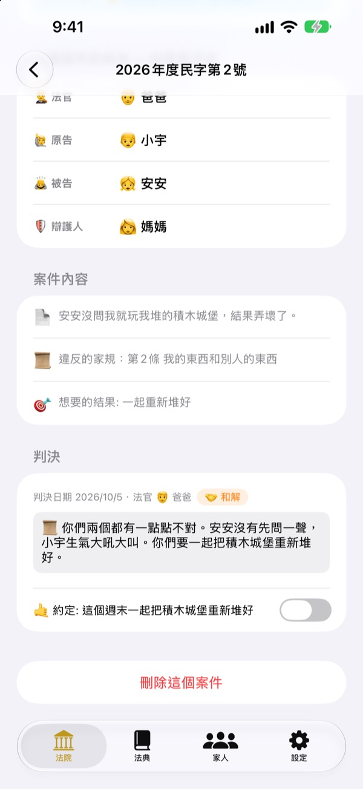
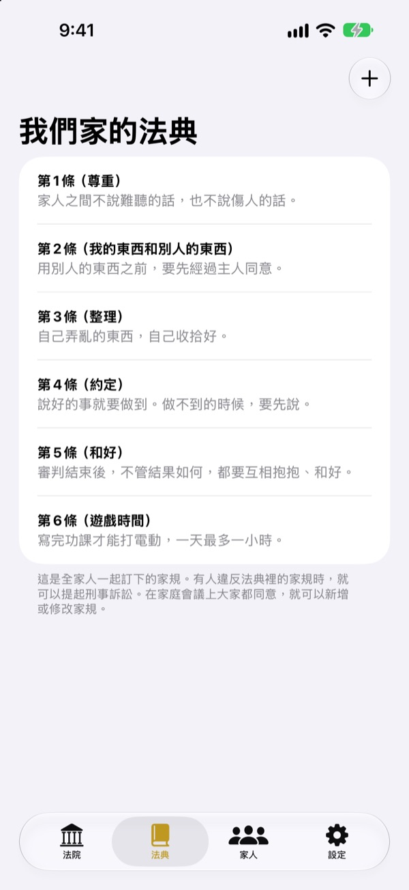

受了委屈，
別哭，開庭說清楚
孩子親自當原告遞訴狀，家人分別擔任法官和辯護人。每一步都有台詞提示輪到誰、該說什麼，第一次玩也能像真正的審判一樣進行。
沒有廣告、沒有付費、不必註冊。紀錄只留在這台裝置裡。

來開一次庭
簡單審一審「弟弟不肯把遙控器給我」這個案子。在上方切換用語難度，敲敲法槌，開開計時器試試。會有聲音，請留意音量。
「是他先動手的！」每次都要你來判誰對，累不累？
一吵架，最後總是大人拍板，輸的那個委屈到哭，贏的那個也不知道自己為什麼贏。家庭法庭給孩子一套順序：把自己的話說完，也把對方的話聽完。判決不只是處罰，而是以約定收尾。
受委屈的人親自提告
誰覺得委屈，誰就當原告遞訴狀。要告誰、請誰當法官，也由提告的人決定。孩子也可以告爸爸媽媽。
看到有人違反家規，還可以當檢察官提起刑事訴訟。法官只能由原告和被告以外的人擔任。

判決以約定收尾
宣判時一起訂下要遵守的約定或處罰，一路勾選到做到為止。結束的案件會累積成我們家的判例。
建議處罰會先列出「恢復原狀」「把心意還回去」這類修復關係的做法，減少遊戲和電視時間放在最後。

我們家的法，我們自己訂
把尊重、整理、守約這些全家商量好的規矩寫成條文，隨時新增或修改。遞訴狀時，可以選出被違反的那一條。
在「認識法院」裡，可以學到法官、原告、檢察官、辯護人各做什麼，以及審判的流程。

三個步驟就能開始
- 1
加入家人
只要名字和一個表情符號，不需要帳號。
- 2
立案
受了委屈走民事，違反家規走刑事，再選好法官。
- 3
開庭
照著台詞說，用計時器控制時間，用法槌宣判。
隨孩子年齡改變的用語
- 法官
- 簡單: 小裁判 · 法庭用語: 審判長
- 原告
- 簡單: 覺得委屈的人 · 法庭用語: 原告
- 被告
- 簡單: 回答的人 · 法庭用語: 被告
- 檢察官
- 簡單: 來告狀的人 · 法庭用語: 檢察官
- 被告
- 簡單: 回答的人 · 法庭用語: 被告
- 辯護人
- 簡單: 小幫手 · 法庭用語: 辯護人
- 民事
- 簡單: 委屈 · 法庭用語: 民事
- 刑事
- 簡單: 說話不算話 · 法庭用語: 刑事
在設定的「用語難度」裡選擇，畫面和台詞的用語會一起改變。幼兒園的孩子可以從「簡單」開始，小學生可以從「標準」開始。
常見問題
幾歲可以玩？
會認字的孩子就能和爸媽一起玩。有台詞和提示，再把用語難度調成「簡單」，由大人念給孩子聽，更小的孩子也能參與。
真的免費嗎？
是的。沒有廣告，也沒有解鎖功能的付費。設定裡有支持開發者的小額贊助，完全自由選擇，不會解鎖或鎖住任何功能。
需要連網嗎？
不需要。審判和紀錄都能離線使用。只有在設定裡傳送意見回饋時，才需要連網並登入 iCloud。
紀錄存在哪裡？
家人、家規、審判和判決紀錄都只存在裝置裡，不會傳到伺服器。開發者能收到的，只有你主動傳送的意見，以及無法辨識個人的匿名使用統計。
可以備份或搬到其他裝置嗎？
在設定裡用「儲存紀錄」匯出成檔案，到另一台裝置用「匯入紀錄」開啟，就能原封不動地還原。以前網頁版匯出的備份檔也能匯入。
iPad 能用嗎？
可以。iPhone 和 iPad 都能用，全家圍著大螢幕開庭正好。
處罰訂得太重怎麼辦？
在檢察官提出處罰的階段，台詞會提醒「不要太重，要做得到」。建議處罰也會先列出恢復原狀、把心意還回去、換位思考這類修復關係的做法。
想徹底刪除資料。
刪除 App 後，裝置裡的所有紀錄都會一起刪除。紀錄從沒離開裝置，所以不會留在別處。想刪除已傳送的意見，請寄信告訴我們。
發現問題、想到新功能或有任何想說的，請寫信到 leeo@kakao.com。也可以在 App 設定裡直接傳送意見。